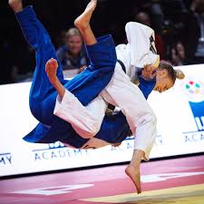
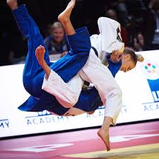
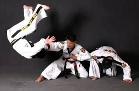
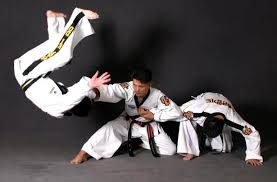

Si eres amante de las artes marciales, te gusta la competencia, quieres aprender defensa personal, o solo quieres hacer ejercicio y mantenerte fuerte y en forma, esta es tu escuela.
Las artes marciales son de origen mienaria, creadas hace mas de dos mil años en asia, mas exactamente en la India, pur un monje budista llamado Bodhidarma.
Bodhidarma comenzo a instruir a los estudiantes del monasterio Long unos ejercicios para la preparacion fisica y mental.
En la actualidad ha cambiado mucho la practica de las artes amrciales, estre las muchas artes marciales existentes en el mundo, en esta escuela enseñamos:
Artes Marciales disponibles en nuesta escuela
1. Taekwon-Do ITF
.jfif)

Competencias dentro del Taekwon-Do ITF
- Matsogui (Combates).
- Lucha contra otros oponentes
- Tuls (Figuras).
- Son movimientos de defensa y ataque, simulando un combate con uno o varios oponentes
- Rompimientos
- Romper tablas de madera ya sea con las manos o con los pies, desde el suelo o saltando.
2. Judo
 

Competencias
- Combates (Randori)
- Los combates consisten en derribar de espaldas al contrincante, que seria un IPON, gana automaticamente, o inmovilizarlo en el suelo durante 20 segundos, otra forma de ganar es por estrangulacion al oponente.
- Katas
- Las katas son unos combates o tecnicas de defensa predeterminadas que se hacen en parejas, la pareja que mejor haga las tecnicas es la ganadora .
3. Hapkido
 

Competencias
- Combates
- Competencias individuales muy parecidas al taekwo-Do
- Competencias de Espada Coreana
- Se compite en modalidad de figuras y de corte con espada de madera.
-
Competencia de saltos
- Competencia de salto de altura y salto de longitud.